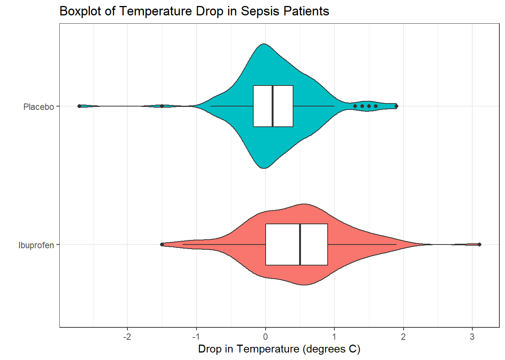
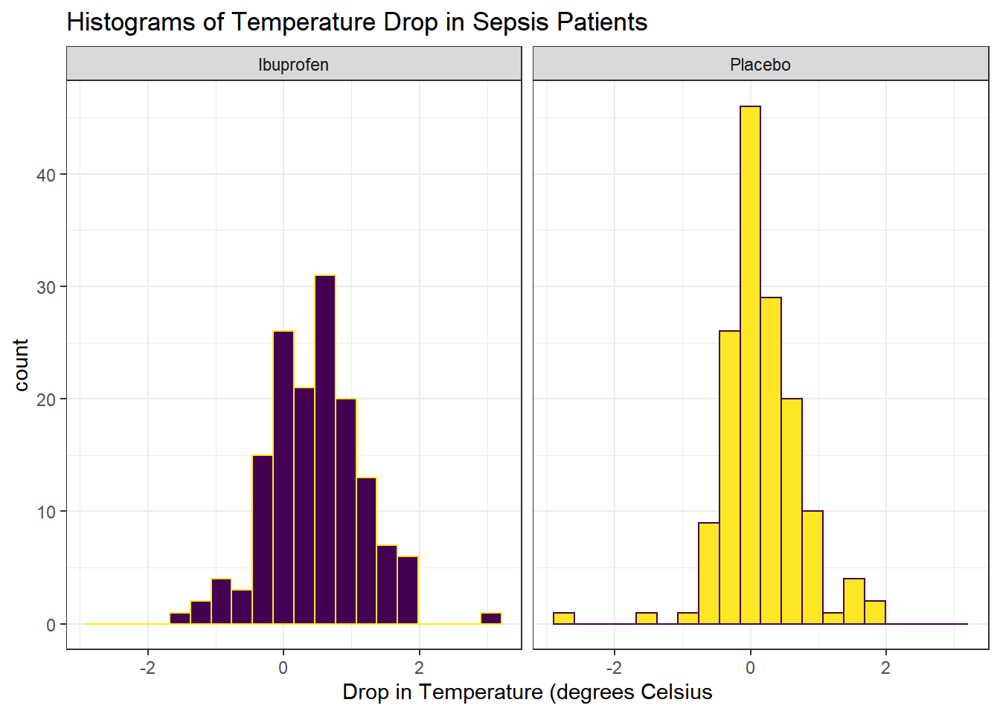
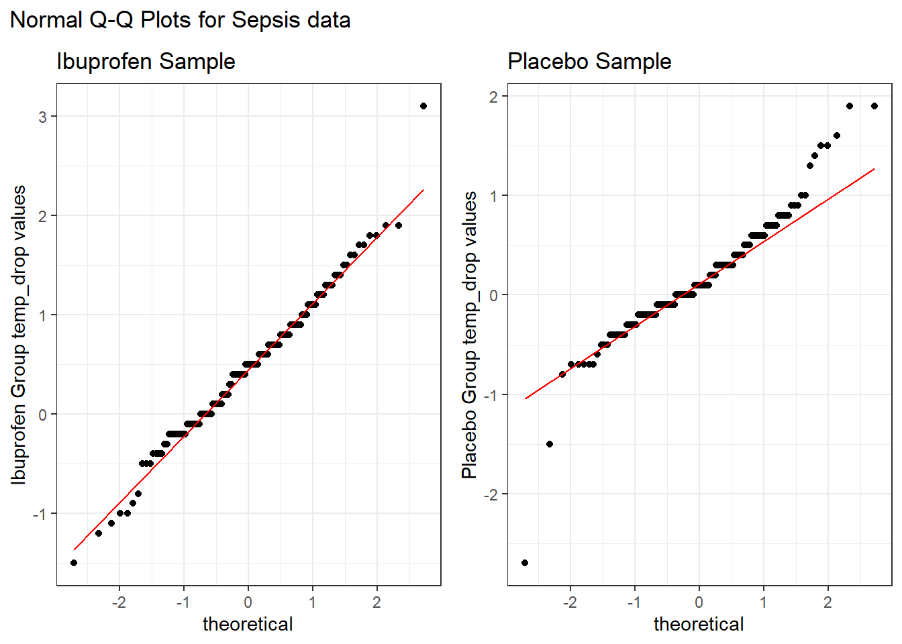

Chapter 18 A Study Comparing Two Independent Samples: Ibuprofen in Sepsis Trial
18.1 The Ibuprofen in Sepsis Randomized Clinical Trial
We will be working with a sample from the Ibuprofen in Sepsis study, as reported in Bernard et al. (1997). My source for these data is Dupont (2002).
Ibuprofen has been shown to have effects on sepsis in humans, but because of their small samples (fewer than 30 patients), previous studies have been inadequate to assess effects on mortality. We sought to determine whether ibuprofen can alter rates of organ failure and mortality in patients with the sepsis syndrome, how the drug affects the increased metabolic demand in sepsis (e.g., fever, tachypnea, tachycardia, hypoxemia, and lactic acidosis), and what potential adverse effects the drug has in the sepsis syndrome.
- Bernard et al. (1997), Abstract.
In this study, patients meeting specific criteria (including elevated temperature) for a diagnosis of sepsis were recruited if they fulfilled an additional set of study criteria (see Bernard et al. (1997)) in the intensive care unit at one of seven participating centers. The full trial involved 455 patients, of which our sample includes 300. 150 of our patients were randomly assigned to the Ibuprofen group and 150 to the Placebo group. In either case, the patient received intravenous treatment (ibuprofen or placebo.) This was also a double-blind study, where neither the patients nor their care providers know, during the execution of the trial, what intervention group was assigned to each patient.
For the moment, we will focus on two variables:
- treat, which specifies the treatment group (Ibuprofen or Placebo), which was assigned via randomization to each patient, and
- temp_drop, the outcome of interest, measured as the change from baseline to 2 hours later in degrees Celsius. Positive values indicate improvement, that is, a drop in temperature over the 2 hours following the baseline measurement.
The data in the sepsis.csv file also contains the subject’s
- id, which is just a code
- race (three levels: White, AfricanA or Other)
- apache = baseline APACHE II score, a severity of disease score ranging from 0 to 71 with higher scores indicating more severe disease and a higher mortality risk
- temp_0 = baseline temperature, degrees Celsius.
but we’ll ignore those for now.
# A tibble: 300 x 6
id treat race apache temp_0 temp_drop
<chr> <chr> <chr> <dbl> <dbl> <dbl>
1 S002 Ibuprofen AfricanA 14 38.7 1.4
2 S004 Ibuprofen White 3 38.3 0.4
3 S005 Placebo White 5 38.6 0
4 S006 Ibuprofen White 13 38.2 -0.2
5 S009 Ibuprofen White 25 38.2 0.6
6 S011 Ibuprofen White 21 38.1 -0.4
7 S012 Placebo White 14 38.6 -0.1
8 S014 Placebo White 23 37.9 0.3
9 S016 Placebo White 16 38.1 0.1
10 S020 Ibuprofen Other 20 39.2 1.5
# ... with 290 more rowssepsis <- sepsis %>%
mutate(treat = factor(treat),
race = factor(race))
sepsis %>%
select(treat, temp_drop) %>%
summary() treat temp_drop
Ibuprofen:150 Min. :-2.700
Placebo :150 1st Qu.:-0.100
Median : 0.300
Mean : 0.308
3rd Qu.: 0.700
Max. : 3.100 Again, the complete study included 455 patients, but our sample includes 300. We have exactly 150 in the Ibuprofen group and 150 in the Placebo group, as it turns out. I picked the sample so as to exclude patients with missing values for our outcome of interest, and then selected a random sample of 150 Ibuprofen and 150 Placebo patients from the rest of the group, and converted the temperatures and changes from Fahrenheit to Celsius.
18.1.1 Matched Pairs vs. Two Independent Samples
These data were obtained from two independent samples, rather than as matched pairs.
- Remember that if the sample sizes were different, we’d know we have independent samples, because matched pairs requires that each subject in the “treated” group be matched to a single, unique member of the “control” group, and thus that we have exactly as many “treated” as “control” subjects.
- But having as many subjects in one treatment group as the other (which is called a balanced design) is only necessary, and not sufficient, for us to conclude that matched pairs are used.
- We only have matched pairs if each individual observation in the “treatment” group is matched to one and only one observation in the “control” group by the way in which the data were gathered.
- Paired data can arise in several ways. The most common is a “pre-post” study where subjects are measured both before and after an exposure happens. In observational studies, we often match up subjects who did and did not receive an exposure so as to account for differences on things like age, sex, race and other covariates. This, of course, is what happens in the Lead in the Blood of Children study from Section 17.
- If the data are from paired samples, we should (and in fact) must form paired differences, with no subject left unpaired.
- If we cannot line up the data comparing two samples of quantitative data so that the links between the individual “treated” and “control” observations to form matched pairs are evident, then the data are not paired.
As Bock, Velleman, and De Veaux (2004) suggest,
… if you know the data are paired, you can take advantage of that fact - in fact, you must take advantage of it. … You must decide whether the data are paired from understanding how they were collected and what they mean. … There is no test to determine whether the data are paired.
18.1.2 Our Key Questions for an Independent Samples Comparison
- What is the population under study?
- All patients in the intensive care unit with sepsis who meet the inclusion and exclusion criteria of the study, at the entire population of health centers like the ones included in the trial.
- What is the sample? Is it representative of the population?
- The sample consists of 300 patients. It is a convenient sample from the population under study.
- This is a randomized clinical trial. 150 of the patients were assigned to Ibuprofen, and the rest to Placebo. It is this treatment assignment that is randomized, not the selection of the sample as a whole.
- In expectation, randomization of individuals to treatments, as in this study, should be expected to eliminate treatment selection bias.
- Who are the subjects / individuals within the sample?
- 150 patients who received Ibuprofen and a completely different set of 150 patients who received Placebo.
- There is no match or link between the patients. They are best thought of as independent samples.
- What data are available on each individual?
- The key variables are the treatment indicator (Ibuprofen or Placebo) and the outcome (drop in temperature in the 2 hours following administration of the randomly assigned treatment.)
18.1.3 RCT Caveats
The placebo-controlled, double-blind randomized clinical trial, especially if pre-registered, is often considered the best feasible study for assessing the effectiveness of a treatment. While that’s not always true, it is a very solid design. The primary caveat is that the patients who are included in such trials are rarely excellent representations of the population of potentially affected patients as a whole.
18.2 Exploratory Data Analysis
First, we’ll look at a boxplot, showing all of the individual data as added-on dots.
ggplot(sepsis, aes(x = treat, y = temp_drop, fill = treat)) +
geom_violin() +
geom_boxplot(width = 0.3, fill = "white") +
guides(fill = FALSE) +
labs(title = "Boxplot of Temperature Drop in Sepsis Patients",
x = "", y = "Drop in Temperature (degrees C)") +
coord_flip() +
theme_bw()
Next, we’ll consider faceted histograms of the data.
ggplot(sepsis, aes(x = temp_drop, fill = treat)) +
geom_histogram(color = "white", bins = 20) +
guides(fill = FALSE) +
labs(title = "Histograms of Temperature Drop in Sepsis Patients",
x = "Drop in Temperature (degrees Celsius") +
theme_bw() +
facet_wrap(~ treat)
Here’s a pair of Normal Q-Q plots. It’s not hard to use a Normal model to approximate the Ibuprofen data, but such a model is probably not a good choice for the Placebo results.
p1 <- sepsis %>%
filter(treat == "Ibuprofen") %>%
ggplot(aes(sample = temp_drop)) +
geom_qq() +
geom_qq_line(col = "red") +
labs(title = "Ibuprofen Sample", y = "Ibuprofen Group temp_drop values") +
theme_bw()
p2 <- sepsis %>%
filter(treat == "Placebo") %>%
ggplot(aes(sample = temp_drop)) +
geom_qq() +
geom_qq_line(col = "red") +
labs(title = "Placebo Sample", y = "Placebo Group temp_drop values") +
theme_bw()
p1 + p2 + plot_annotation(title = "Normal Q-Q Plots for Sepsis data")
We’ll also look at a ridgeline plot.
ggplot(sepsis, aes(x = temp_drop, y = treat, fill = treat)) +
ggridges::geom_density_ridges(scale = 0.9) +
guides(fill = FALSE) +
labs(title = "Temperature Drop in Sepsis Patients",
x = "Drop in Temperature (degrees Celsius)", y = "") +
ggridges::theme_ridges()Picking joint bandwidth of 0.182
The center of the ibuprofen distribution is shifted a bit towards the more positive (greater improvement) direction, it seems, than is the distribution for the placebo patients. Here are some key numerical summaries, within the treatment groups, which buoy this conclusion.
sepsis %>% group_by(treat) %>%
summarise(n = n(),
median = median(temp_drop),
Q1 = quantile(temp_drop, 0.25),
Q3 = quantile(temp_drop, 0.75),
mean = mean(temp_drop),
sd = sd(temp_drop)) # A tibble: 2 x 7
treat n median Q1 Q3 mean sd
<fct> <int> <dbl> <dbl> <dbl> <dbl> <dbl>
1 Ibuprofen 150 0.5 0 0.9 0.464 0.688
2 Placebo 150 0.1 -0.175 0.4 0.153 0.571References
Bernard, Gordon R., Arthur P. Wheeler, James A. Russell, Roland Schein, Warren R. Summer, Kenneth P. Steinberg, William J. Fulkerson, et al. 1997. “The Effects of Ibuprofen on the Physiology and Survival of Patients with Sepsis.” New England Journal of Medicine 336: 912–18. http://www.nejm.org/doi/full/10.1056/NEJM199703273361303#t=article.
Bock, David E., Paul F. Velleman, and Richard D. De Veaux. 2004. Stats: Modelling the World. Boston MA: Pearson Addison-Wesley.
Dupont, William D. 2002. Statistical Modeling for Biomedical Researchers. New York: Cambridge University Press.